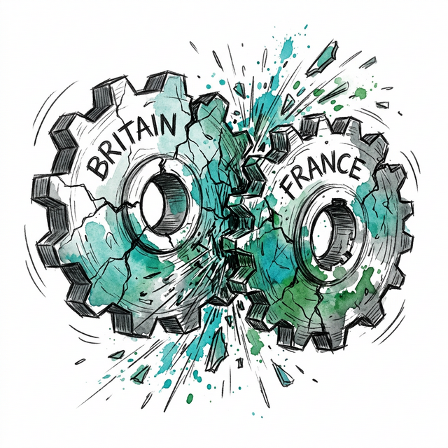
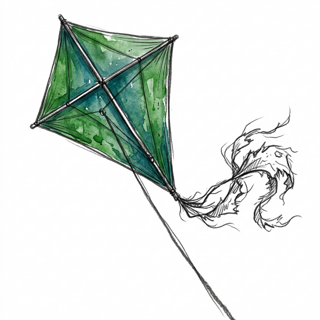
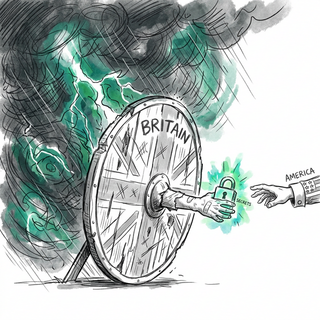
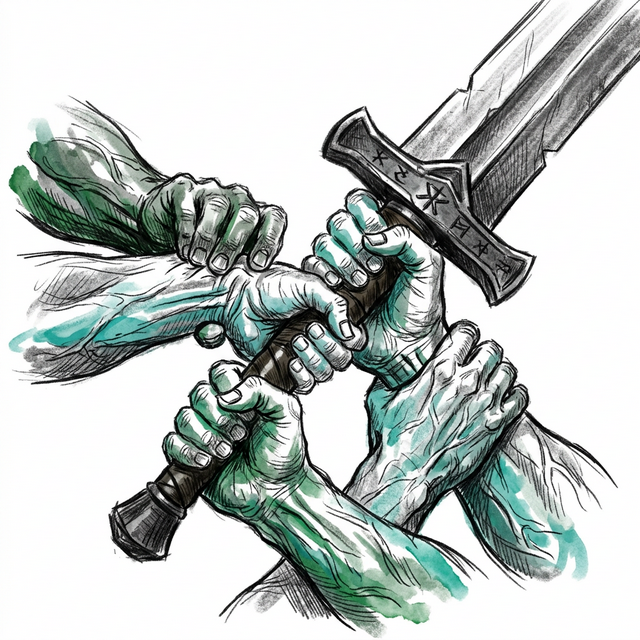
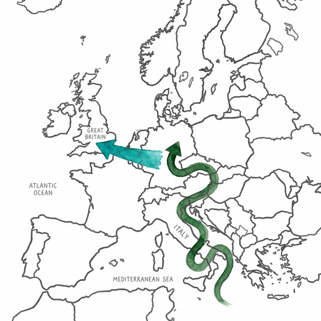
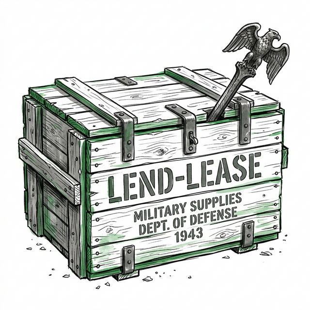
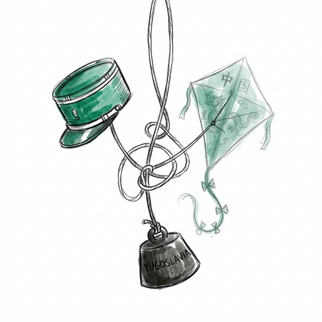
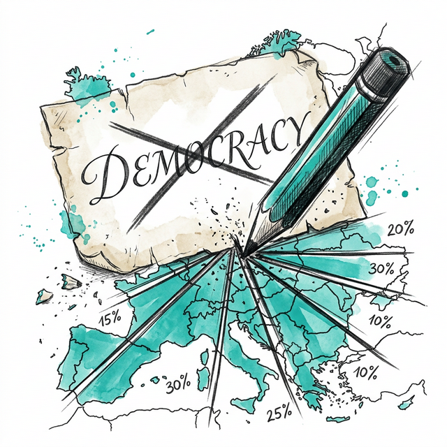
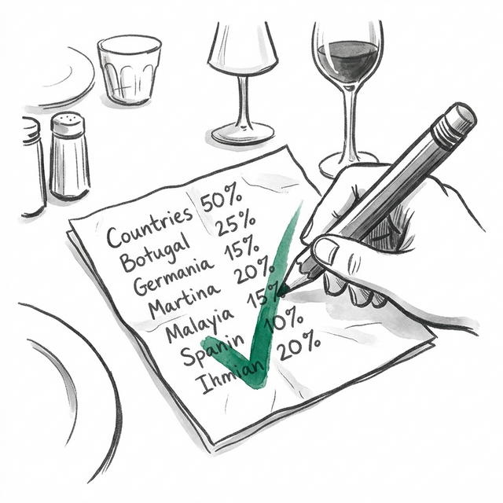
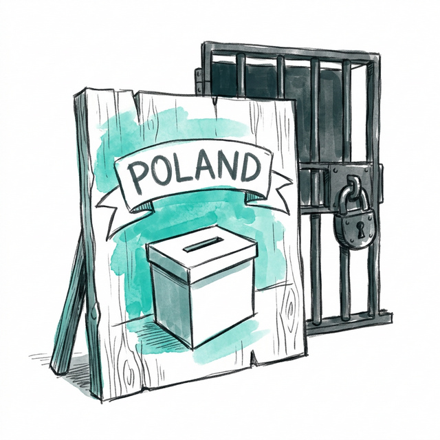

On the fifth evening of the Yalta Conference, February 8, 1945, Stalin rose and proposed a toast.
He praised the British-Soviet-American alliance as the closest in the history of diplomacy. He declared that the Allies did not deceive each other. "Possibly our alliance is so firm just because we do not deceive each other. Or is it because it is not so easy to deceive each other?"
The ironies were extraordinary. Even as Stalin spoke, Soviet listening devices recorded every word in the British and American palaces. Every morning he was briefed on Churchill's and Roosevelt's private conversations. That afternoon he had met Roosevelt alone and extracted territorial promises in China and the Pacific without telling the British. And he had repeatedly promised a "strong, independent, democratic" Poland while installing a communist puppet regime in Warsaw.
When Churchill complained two days earlier that the future of eastern Europe "rests on your bayonets," he was stating the truth.
And yet, as Stalin himself said, it would not have been possible to win the war without the alliance.
That tension is the subject of Tim Bouverie's Allies at War. The Second World War was won by a coalition whose collaboration was simultaneously decisive and poisoned. Britain, France, the United States, and the Soviet Union worked together with extraordinary effect. They also lied to each other, competed with each other, and swindled each other. As Churchill put it: "There is only one thing worse than fighting with allies and that is fighting without them."
By the end, you will discover:
- Why Britain's first "victory" of the war was against her own ally.
- Why the Americans saw the British Empire as an obstacle to dismantle, not an ally to preserve.
- Why backing the "right" resistance movement in Yugoslavia produced a communist dictatorship that lasted forty years.
- Why Yalta, so celebrated at the time, became a synonym for betrayal.
- Why the world the Allies built looked so different from the world they claimed to be fighting for.
The 1-Minute Summary
The Allies won the Second World War. But the alliance that won it was never truly united. Britain, France, the United States, and the Soviet Union shared one goal, defeating Hitler, and disagreed about almost everything else.
The Anglo-French alliance collapsed within ten months. Britain then spent a year fighting alone while courting America with desperate, lopsided deals. When the Grand Alliance finally formed in 1942, its partners quarreled over strategy, money, empire, and who would control postwar Europe. The Americans wanted to destroy the British Empire. The Soviets wanted to control eastern Europe. The British wanted to save as much as possible.
The result was a series of compromises that shaped the Cold War world: communist regimes installed across eastern Europe, China abandoned to a civil war its ally barely supported, Yugoslavia handed to Tito, and Poland, the country Britain had gone to war to defend, delivered into Soviet hands. The Allies defeated Hitler. They could not agree on much else.
If this breakdown resonates, explore more at longform.online
Module 1: The Alliance That Was Born Broken

In June 1940, Churchill landed on a pockmarked French airfield and found no one to meet him.
He had flown to Tours to attend an urgent conference with French Prime Minister Paul Reynaud. He arrived to find a half-deserted aerodrome, a group of idle airmen from whom he had to beg a car, and a city clogged with the 6 to 10 million refugees fleeing the German advance. When he finally reached the Préfecture, Reynaud wasn't there either. The British delegation walked across the wet grass, found a hotel, strong-armed the owner into a private room, and ate cold chicken and Vouvray while they waited.
This chaos was not accidental. It was a precise image of what the Anglo-French alliance had always been.
The Alliance Nobody Wanted

The alliance between Britain and France, which began on September 3, 1939, was born not of friendship but of shared danger. The two countries had fought together in the First World War and fallen out almost immediately afterward. France wanted to cripple Germany permanently. Britain thought the French were being vindictive. France wanted the Rhineland separated from Germany. Britain opposed it. When France sent troops into the Ruhr in 1923 to seize unpaid reparations, Britain publicly condemned the action. The economist John Maynard Keynes accused the French of "senseless greed" in his bestselling book on Versailles. British officials called them "impossible people" and "rather insane" for poking the German tiger.
When Hitler came to power in 1933, the British attitude did not change. The MacDonald-Baldwin Government refused to confront illegal German rearmament. In June 1935, Britain signed a naval treaty with Hitler allowing the German Navy to expand to 35 percent of the Royal Navy. This abrogated the arms clauses of Versailles and was presented to Paris as a done deal. The French Prime Minister was incandescent.
Yet France dared not break with Britain. All French prime ministers agreed that no French soldier would fight Germany without British backing. This gave Britain enormous leverage. It allowed Chamberlain to pursue appeasement with little regard for French opinion. When Chamberlain flew to meet Hitler during the Czech crisis of 1938, he didn't even inform the French Prime Minister. As the French Foreign Minister noted ruefully: "The French Government was only a tail to the British kite."
The French people knew it too. There was a long-running French trope of "perfidious Albion." It was not entirely unfair. Britain had helped build the Versailles settlement, then declined to enforce it. Britain had guaranteed French security, then found reasons not to. When the two countries finally went to war together, they did so with deep, longstanding mutual suspicion on both sides.
The Phony War and Its Discontents
The basic Allied strategy in the autumn of 1939 was defensive. France would hold the Germans behind the Maginot Line. Britain would blockade the German economy. Together, they would mobilize their superior resources and win a long war, as they had in 1918.
It was prudent. And it was also deeply demoralizing.
French soldiers sat in their bunkers through the winter of 1939-1940 fighting nobody. Drunkenness and absenteeism proliferated. "The army was rotting from inaction," recalled one junior officer. Alan Brooke, commanding the British II Corps, watched the "slovenliness, dirtiness and inefficiency" of the French soldiers he encountered and wondered whether France was "a firm enough nation to again take their part in seeing this war through."
In Paris, meanwhile, the cafés were full and the race meetings continued at Auteuil. Maurice Chevalier sang "Paris Sera Toujours Paris" at the Casino de Paris.
The mutual resentments multiplied. French soldiers resented how much better paid their English counterparts were. The British had only thirteen divisions in the field compared to France's ninety-one, feeding the German propaganda line that Britain intended to "fight to the last Frenchman." Daladier raged about "the English, behind the Channel, conserving their energies so as to last out."
There was also a failed Scandinavian adventure. Both powers had identified Swedish iron ore, shipped through Norwegian waters, as a critical German resource. An Allied expedition to Norway in April 1940 to cut this supply line was underfunded, undermanned, and misconceived. The Allied force arrived in Norway without maps, radios, skis, or snow boots. French officers noted that the British seemed to have conceived the campaign "along the lines of a punitive expedition against the Zulus." The expedition collapsed. It cost Chamberlain his job and installed Churchill as Prime Minister.
The Fall of France
Then the real blow came.
On May 10, 1940, German forces struck through the Ardennes. Within days, they had pierced the French line at Sedan and the road to Paris was open. The French commander had no strategic reserve. When Churchill flew to Paris on May 16 and asked General Gamelin "Where is the strategic reserve?", the answer was: "There is none."
It was, Churchill later recalled, among the greatest shocks of his life.
Over the following weeks, as the Wehrmacht drove the Allied armies into the sea at Dunkirk, relations between Britain and France deteriorated from fractious to poisonous. French soldiers found that the British had blocked key roads to facilitate their own march to the coast. When French troops tried to board the evacuation boats, they were turned away, occasionally at gunpoint. The French commander accused his British counterpart of abandoning his plans. A chorus of recrimination erupted on all sides.
Churchill tried to hold the alliance together. He made five visits to France during the battle. He threw ten fighter squadrons into the cauldron even when his Air Staff told him it was suicidal. He promised three British divisions to hold the Dunkirk perimeter so French troops could escape, a promise his military advisers thought excessive. He even endorsed, briefly, a proposal for a complete political union between Britain and France, an idea so impractical it went nowhere.
None of it was enough. By June 13, when Churchill arrived at Tours to find cold chicken and an absent prime minister, the alliance was effectively over. Reynaud asked to be released from the agreement prohibiting a separate peace. Pétain was forming a new government. The armistice followed a week later.
Ten months. That was all the Anglo-French alliance lasted in wartime. Now came the question of what Britain would do with the French fleet, which had not surrendered but was no longer fighting. The answer to that question became, in a bitter irony, Britain's first decisive act of the war.
The Allies had been unable to agree on almost anything while France was fighting. What happened next would show how ruthlessly Britain could act when she was fighting alone.
Module 2: Perfidious Albion: Britain Alone and the Battle for America

At 9:05 on the morning of July 3, 1940, Captain Cedric "Hooky" Holland descended from HMS Foxhound into a motorboat and headed toward the French fleet at Mers el-Kébir in North Africa.
Holland liked and admired the French Navy. He had spent two years in Paris as Naval Attaché. Admiral Darlan had spoken of him "in terms of the highest praise." Now he was carrying an ultimatum. The French fleet would join the British, intern its ships in a neutral port, sail to the French West Indies, or scuttle. If none of these terms was accepted, Force H would open fire.
The French admiral, Gensoul, refused to see him in person and refused to accept the terms. Negotiations dragged on through the heat of the day. British intelligence intercepted a French Admiralty order: meet force with force. At 5:54 p.m., the British opened fire.
The Bretagne took a direct hit. A tower of black smoke surged skyward. Within minutes she had capsized. 1,290 French sailors were killed, over a thousand from the Bretagne alone. The survivors could barely believe it. "These English, what can I say!" exclaimed the Bretagne's chaplain. "To think you and I wanted to carry on the fight with them! And they have just murdered us all!"
It was the first time since Waterloo the two nations had purposely shot at each other.
Why Britain Pulled the Trigger
The British considered Mers el-Kébir a hateful act. Admiral Somerville called it a "beastly operation." Holland tried to resign from the Navy. Both men had opposed the use of force from the start and believed the action unnecessary. With hindsight, they may have been right. When Germany moved on Toulon in November 1942, the French Navy scuttled its ships exactly as Darlan had always promised.
But in June 1940, Britain was fighting for survival. The fall of France had been the most portentous military defeat in British history. Germany now controlled the French coastline. German U-boats sank thirty-one ships off the British coast in June alone. The Admiralty's nightmare was the French fleet, one of the most powerful in Europe, falling under German control. The French capital ships could tip the entire balance of naval power.
More than that: Churchill wanted to send a message to the world, and especially to America. Since many people believed Britain was about to surrender, he wanted to show that she still meant to fight. The morning after the attack, the British Ambassador in Washington sent Roosevelt a simple note: "You will see that Winston Churchill has taken the action in regard to the French Fleet which we discussed and you approved."
The American reaction was everything Churchill had hoped. Before Mers el-Kébir, British Ambassador Lord Lothian reported, Americans had been pessimistic about Britain's chances and suspicious of appeasement. After the attack, there was a "realization that Great Britain was alive and kicking." American press commentary was "almost universally favourable."
Roosevelt told his adviser Harry Hopkins that it was Mers el-Kébir that convinced him Britain would continue the war, if necessary for years, if necessary alone.
The Battle for America
"I shall drag the United States in," Churchill told his son Randolph while still shaving, five days into the Battle of France.
It was not as simple as it sounded.
In the spring of 1940, the United States possessed the eighteenth largest army in the world, behind Belgium, Portugal, and Switzerland. There was only one tank brigade in the entire US Army. The country was fiercely isolationist. Polls showed that only a third of Americans thought Britain would win the war. Roosevelt put the odds at "about one in three." The American Ambassador to London, Joseph Kennedy, sent a stream of hysterical messages to Washington insisting that Britain was "licked."
The challenge was not just American opinion. It was American law. Neutrality Acts passed through the 1930s barred the US from directly supplying belligerents with war material. Roosevelt wanted to help but needed legal cover, congressional approval, and public support.
Churchill began by painting doomsday scenarios. He warned Roosevelt that if Britain went under, a successor government might have to bargain with Germany "using the fleet as the sole remaining counter." This was Roosevelt's nightmare: the Royal Navy turned against America. The President was steeped in the teachings of Alfred Mahan, the naval strategist who argued that Atlantic supremacy had been "a British lake" for over a century and that if it changed hands, "the USA could never live."
The first concrete deal was struck in September 1940. Britain would give America ninety-nine-year leases on naval and air bases across the Caribbean and Atlantic. America would send fifty old destroyers. The ships turned out to be nearly worthless: weak armament, defective engines, corroded hulls. Lloyd George said Uncle Sam had behaved with "characteristic cupidity" in making Britain pay so dearly for a flotilla of "old iron." But the real point was political. Churchill told the War Cabinet it meant America had "made a long step towards coming into the war on our side. To sell destroyers to a belligerent was certainly not a neutral action."
Around the same time, six British scientists quietly boarded a ship bound for America with a small metal box. Inside were Britain's most important scientific secrets: blueprints for rockets, gyroscopic gunsights, submarine detectors, the cavity magnetron essential to radar, plans for the jet engine and the atomic bomb.
They asked for nothing in return.
This was Britain's strategy throughout: give generously, bind America into the relationship, trust that the link would eventually become formal. It was the Foreign Office's approach over Churchill's instinct for hard bargaining, and it worked. By March 1941, the Lend-Lease Act had passed Congress, allowing America to supply Britain with war material on deferred payment. By December 1941, Japan had bombed Pearl Harbor and the United States was in the war.
But the Americans who arrived as allies came with their own agenda. And it had little in common with Britain's vision of what they were fighting for.
The coming of American power would transform the alliance. It would also reveal, with uncomfortable clarity, just how different the Allied partners' visions of the postwar world truly were.
Module 3: The Grand Alliance: Together, and at Each Other's Throats

On June 22, 1941, Germany invaded the Soviet Union. Within days, Churchill was on the radio welcoming the USSR as an ally. The man who had said, in 1919, that Bolshevism should be "strangled in its cradle" now declared that "the Russian danger is our danger."
The new alliance of Britain, America, and the Soviet Union had a combined population of 830 million. The Axis had 260 million. In 1943 alone, the Allies produced nearly 150,000 aircraft and 60,000 tanks. The Axis produced 43,000 aircraft and 12,000 tanks. The material mismatch was so enormous that the real question was not whether the Allies would win but how much the victory would cost.
The answer depended entirely on how well they could cooperate.
The Strategic Divide

The fundamental dispute within the Grand Alliance was strategic. Britain and America agreed that Germany had to be defeated before Japan. They disagreed about everything else.
Churchill wanted to attack Germany through the "soft underbelly" of the Mediterranean, through North Africa, Sicily, Italy, and potentially up through Yugoslavia into the heart of Europe. This strategy served both military and political purposes. It husbanded British strength, played to Britain's naval supremacy, and, crucially, might allow Allied armies to reach central Europe before the Soviets.
The Americans thought this was a waste of time and suspected Churchill of prioritizing British imperial interests over the fastest route to victory. They wanted a direct cross-Channel assault on northern France as early as 1942 or 1943 at the latest. Marshall and the US Army chiefs pushed relentlessly for what became Operation Overlord.
The debate was bitter. Churchill eventually prevailed in delaying the invasion until June 1944. By then, however, the Soviets had already done much of the killing. They had borne the most devastating losses of the war: perhaps 27 million dead, an incomprehensible figure. They had fought the largest land battles in history, from Stalingrad to Kursk. By the time American and British troops landed in Normandy, the Wehrmacht had already been mortally weakened in the east.
Stalin never let Churchill or Roosevelt forget this. He pressed relentlessly for a second front, accusing the Western Allies of leaving the Soviet Union to bleed alone. His complaints were not entirely wrong.
The Battle Over the Empire

While Britain and Russia argued about strategy, the United States was pursuing a different agenda entirely.
Franklin Roosevelt genuinely believed that European colonialism was a moral evil and a practical obstacle to the kind of postwar world he wanted to build. He said so, repeatedly. He told Churchill directly that he hoped India would receive independence after the war. He told his son Elliott that "the colonial system means war." He worked to ensure that the Atlantic Charter, the joint declaration of Allied war aims signed in August 1941, included a right of self-determination that British officials knew could be used to dismantle the Empire.
Churchill was furious. He insisted the Atlantic Charter applied to European peoples living under Axis occupation, not to British colonial subjects. He told Parliament that he "had not become the King's first minister to preside over the liquidation of the British Empire."
But the Americans were relentless. The State Department obstructed British efforts to maintain their preferred position in the Middle East. US officials encouraged Indian nationalist leaders. Roosevelt explicitly tried to use Lend-Lease leverage to force Britain to open her closed imperial trading bloc to American competition. As one historian has observed, the Roosevelt Administration was simultaneously Britain's most essential ally and one of the greatest threats to British power.
The British were not without weapons. Churchill deployed his considerable personal relationship with Roosevelt, his rhetorical gifts, his sheer force of will. Britain's scientists, intelligence services, and military expertise gave her genuine leverage. And ultimately, the two countries needed each other too much for the tensions to become a rupture.
The "special relationship" was real. The Anglo-American alliance was, as Bouverie calls it, the "most formidable, intricate, and in many ways harmonious military alliance in history." The two countries shared intelligence, coordinated strategy, and integrated their military commands to an unprecedented degree. But "harmonious" coexisted with a sustained American campaign to inherit Britain's global position, conducted even as American soldiers were dying alongside British ones.
Stalin's Price
The third partner was the most difficult.
Stalin was a man of focused and terrifying clarity. He wanted three things: Germany defeated and permanently weakened, Eastern Europe under Soviet control as a security buffer, and recognition of the Soviet Union as a great power equal to any.
He was willing to use every tool available to get them. He used Allied conferences to extract promises while concealing his own intentions. He planted listening devices in the palaces where his allies stayed. He fed intelligence agents into the American and British delegations. When he promised a "free and democratic" Poland, he was simultaneously installing a communist puppet regime in Warsaw.
The Western Allies struggled to read him accurately. Churchill oscillated between periods of genuine warmth, as after the Tolstoy Conference in Moscow in October 1944, and periods of deep alarm. Roosevelt believed that personal charm and straightforward engagement could win Stalin's genuine cooperation. He was convinced that Stalin's fundamental desires were reasonable and that Soviet belligerence was defensive rather than aggressive.
George Kennan, deputy to the American Ambassador in Moscow, knew better. In September 1944, he sent Washington a masterly dispatch: "Russian efforts in this area are directed to only one goal: power...The main thing is that it should be amenable to Moscow influence, and if possible to Moscow authority." Nobody at the top wanted to hear it.
The price of Soviet alliance was being paid, mile by mile, as the Red Army advanced westward. By the time the Big Three gathered at Yalta in February 1945, the Soviets occupied most of Poland, all of Romania, Bulgaria, and Hungary, and were closing on Germany. The geography of the coming postwar world was being written in tank tracks.
Now comes the question that haunted the later stages of the war: what the Allies would do with the countries they liberated, and the darker question of what "liberation" actually meant.
Module 4: Difficult Allies: De Gaulle, China, and the Complications of Victory

When Charles de Gaulle arrived in London on June 17, 1940, he had one suitcase, 100,000 francs in French Government funds, and no soldiers.
He was a virtually unknown brigadier general who had served eleven days in the most disastrous French government in history. When a French lawyer called two days after his arrival and offered his services, de Gaulle was frank: "I have neither money nor men. We are starting from zero. You could begin by holding the fort. That way de Courcel and I can go and have lunch and at least there will be someone to answer the telephone."
Over the next five years, this difficult, imperious, visionary man would consume more of British time and energy than almost any other Allied partner, and he would do so without commanding a significant army, controlling significant territory, or representing a recognized government.
The General Who Was France
De Gaulle's central claim was extraordinary: he was not merely leading a French resistance movement. He was France. Not representing France, not acting for France. He was France.
The British found this baffling, infuriating, and occasionally useful. Churchill recognized de Gaulle as "the leader of all Free Frenchmen, wherever they may be" in June 1940, largely because no more senior French figure had come forward. He then spent years regretting the decision while being unable to reverse it.
The problems were constant. De Gaulle tried to send French aviators serving with the RAF to the Tower of London when they declined to transfer to his command. He insulted British officials, alienated American ones, launched an ill-fated expedition to Dakar that ended in farce and failure, and repeatedly threatened to walk out of negotiations unless his vision of French grandeur was satisfied.
The Americans hated him. Roosevelt found de Gaulle's pretensions risible and spent considerable energy trying to find alternative French leaders to work with. He backed the Vichy admiral Darlan after the North Africa landings in 1942, which caused a political scandal. He backed the general Giraud, who lacked de Gaulle's political gifts. He tried to exclude de Gaulle from Overlord planning. None of it worked.
De Gaulle prevailed because he was right about one essential thing: France needed a leader who would insist on her dignity and her great power status, and none of the alternatives could do that. When the liberation of Paris came in August 1944, it was de Gaulle who walked down the Champs-Élysées to roaring crowds, not an American-backed alternative.
But de Gaulle's success extracted a cost. The Anglo-American relationship with France remained poisoned by resentment for years. And the energy the Allies spent managing his demands was energy not spent on other things.
The Phantom Ally: China
The Chinese case was more straightforwardly tragic.
Chiang Kai-shek's Nationalist government had been at war with Japan since 1937, four years before Pearl Harbor. When the Americans entered the conflict, they designated China one of the "Big Four" Allied powers, equal in status to Britain, the Soviet Union, and the United States. Roosevelt spoke of China as a great democracy and a natural partner. The rhetoric was generous.
The reality was very different.
China received relatively little material support. The supply route over the Himalayas, the legendary "Hump," delivered enough to sustain but not enough to transform the Chinese war effort. The American general sent to command Chinese forces, Joseph "Vinegar Joe" Stilwell, developed a consuming hatred for Chiang, whom he called "the Peanut" in his diary. Stilwell's contempt was eventually so provocative that Roosevelt had to recall him, but not before he had handed Chiang a personal letter from the President demanding that Chinese troops be placed under Stilwell's command. Roosevelt's final message, composed at Washington's insistence, was humiliating. When Stilwell delivered it in person, Chiang "turned green and lost the power of speech."
The relationship never recovered. China ended the war in much the same position as she had entered it: outgunned, financially exhausted, and consuming herself in an internal conflict between the Nationalists and Mao's communists. When the Allies gathered at Yalta in February 1945, Chiang was not invited. His country's fate, including significant territorial concessions to the Soviet Union, was decided without him. China was a "phantom member of the illusory 'Big Four.'"
Yugoslavia and the Cost of Pragmatism
The Yugoslav case illustrated, with particular sharpness, the gap between Allied intentions and Allied outcomes.
After Germany occupied Yugoslavia in 1941, two resistance movements emerged. One was led by Colonel Draža Mihailović, a Serbian royalist who commanded the Četnik forces. The other was led by Josip Broz, known as Tito, a communist partisan with organizational genius and connections to Moscow.
The British initially backed Mihailović. Then reports began filtering out suggesting the Partisans were more effective fighters, that the Četniks were collaborating with the occupiers, and that Tito commanded far larger forces. British liaison officers, most notably the historian-turned-soldier Fitzroy Maclean, sent back reports that were enthusiastically pro-Partisan. When Maclean asked Churchill whether backing a communist movement might prove troublesome after the war, the Prime Minister replied: "My task was simply to find out who was killing the most Germans and suggest means by which we could help them to kill more. Politics must be a secondary consideration."
Britain switched its support entirely to Tito, pressured King Peter to dismiss Mihailović, and eventually abandoned the royalist cause completely.
The Partisans used British weapons to kill Germans. They also used them to kill Četniks. The civil war was always as important to Tito as the war against the Axis. When British liaison officers later revealed that most of the munitions had been used against rival Yugoslavs rather than Germans, the damage was done.
Tito took power and established a communist state. He ruled Yugoslavia until his death in 1980. Later, Eden was asked at a political dinner what troubled his conscience most after five years as wartime Foreign Secretary. His answer was simple: "Our betrayal of Mihailović."
Churchill's pragmatism about Yugoslavia was not irrational. There were genuine military reasons to back whoever was killing the most Germans. But it illustrated a pattern repeated across the war: the Allies made expedient choices in the heat of the conflict whose long-term consequences they did not adequately consider, and which shaped the postwar world in ways they had not intended.
The question was whether, at the highest levels of Allied diplomacy, the same pattern was about to be repeated. And the answer arrived at Yalta.
Module 5: The Price of Victory: Yalta and the World the Allies Built

On February 3, 1945, the Sacred Cow landed on a makeshift airfield in Crimea.
Roosevelt was lowered from the plane in his wheelchair. Churchill's doctor, Lord Moran, looked at the President's face and correctly diagnosed "hardening of the arteries of the brain in an advanced stage." His skin was yellow and drawn. He had aged shockingly. The 80-mile drive to Yalta on bomb-cratered roads took four hours. Churchill, told they were only halfway through, exclaimed: "Christ! Five more of this."
The palace where the British delegation stayed had served as Erich von Manstein's headquarters during the German occupation. Every window had been replaced. Romanian POWs had worked twelve-hour shifts to make it habitable. The bedbugs survived.
This was Yalta. The most important and most controversial summit of the war.
The Percentages Deal and the Limits of Diplomacy

Churchill had been trying to manage the Soviet advance for months.
In October 1944, he had flown to Moscow for what he called the Tolstoy Conference. After discussing Poland, he reached into his jacket and produced what he called a "naughty document": a handwritten list of Balkan countries and the percentages of influence Britain and the Soviet Union would exercise in each. Romania: 90 percent Soviet, 10 percent British. Greece: 90 percent British, 10 percent Soviet. Yugoslavia and Hungary: split fifty-fifty.
Stalin took out his blue pencil and made a large tick on the paper.
This was the sort of politics he liked: an old-fashioned carve-up.
Churchill suggested they burn the document. Stalin told him to keep it.
The deal reflected brutal realities. The Soviets occupied most of Romania. British forces were in Greece. The percentages merely formalized what geography had already determined. Churchill's calculation was stark: better to save Greece than lose both Greece and Romania.
And for a time, it seemed to work. When fighting broke out in Athens in December 1944 between British forces and communist partisans, Stalin honored the deal. No Soviet support reached ELAS. Soviet officials arrested a Greek communist trying to reach Moscow for help. British intervention stabilized Greece, at least temporarily.
The cost was the explicit acceptance of Soviet dominance in Romania, Bulgaria, Hungary, and, in practice, Yugoslavia. These were not small concessions.
Poland: The Wound That Would Not Close

The deepest wound was Poland.
Britain had declared war on Germany in September 1939 to defend Polish independence. Two years later, when the Soviet Union became an ally, Churchill discovered that his new partner had participated in Poland's destruction. In September 1939, while Germany attacked from the west, the Soviets attacked from the east. The two powers had divided Poland between them under the Molotov-Ribbentrop Pact.
By 1945, Poland's fate was being negotiated by the three powers that had, between them, invaded and occupied it. The Soviets wanted a Poland with borders shifted westward, a communist-dominated government installed in Warsaw, and a guarantee of Soviet security. Churchill wanted something at least nominally independent. Roosevelt wanted any agreement that would bring the Soviets into the war against Japan and into the new United Nations organization he was planning.
At Yalta, Stalin promised free and democratic elections in Poland. He promised an independent and sovereign Polish state. He promised participation of Polish leaders from London in the new government. The promises were explicit, signed, and worthless.
Within months, the Soviet-backed government in Warsaw had arrested sixteen leaders of the Polish underground, who had emerged from hiding to meet with Soviet officials. Poland's parliamentary opposition was liquidated. By 1947, the country was a communist state. The Polish government-in-exile in London, the legitimate government that Britain had recognized throughout the war, ceased to be relevant.
The Myth of Yalta
The conservative critique of Yalta, which developed rapidly in the late 1940s, accused the Western Allies, especially Roosevelt, of naive capitulation to Soviet demands. Senator Robert Taft charged the American delegation with having accepted terms that "a fair-minded person would not accept."
This criticism is partly right and mostly wrong.
The Western Allies did not give Stalin eastern Europe at Yalta. The Red Army gave it to him. Soviet forces occupied Poland, Romania, Bulgaria, and Hungary. There was nothing Churchill or Roosevelt could do about this short of military confrontation with their ally while the war against Germany was still unfinished. Stalin was not going to withdraw. The percentages deal and the Yalta agreements reflected power realities that existed regardless of what was signed.
What the agreements did was legitimize Soviet dominance while papering it over with promises of democracy that everyone at the table knew were fictional. Churchill and Roosevelt accepted this, not because they were foolish, but because they prioritized defeating Germany and drawing the Soviets into the war against Japan over the fate of eastern European populations they could not actually help.
The result was a world that looked very different from the one the Allied declarations had promised. The Atlantic Charter had spoken of the right of all peoples to choose their own form of government. The agreements at Yalta and Moscow's percentages table handed half of Europe to a regime that specifically denied that right. As Bouverie puts it, the tragedy of the Second World War, as prosecuted by the Allied alliance, was that it made much of Europe and Asia "safe" for communism.
Not through malice. Through the logic of coalition warfare, where what could be achieved together was always limited by what each partner could be persuaded to accept.
What Churchill Understood
Churchill arrived at Yalta carrying what he described as "the burden of responsibility more heavily than at any other moment of the war." He had fewer illusions than Roosevelt about what Soviet promises were worth. He had complained to a Soviet diplomat two days before Stalin's toast that the future of eastern Europe "rests on your bayonets." He knew that the promises coming from Stalin's lips were instruments of statecraft, not commitments of principle.
But he also knew that he had no leverage. Britain was exhausted. The British Empire was visibly declining. American power was supreme and American intentions toward British interests were not entirely friendly. And the Soviet Union had bled on a scale that gave its leader a moral claim that was hard to answer.
In a telegram he drafted the morning after his percentages conversation with Stalin but chose not to send, Churchill wrote that the percentages were "no more than a guide for the conduct of our affairs." He knew they were a compromise with realities he could not change. He made the best of a bad position and accepted that the world emerging from the war would not be the world the Allied declarations had promised.
"There is only one thing worse than fighting with allies," he had said. "And that is fighting without them."
He was right on both counts.
Conclusion
Return to February 8, 1945. The last evening of the Yalta Conference. Stalin proposes his toast.
He praises the alliance. He praises frankness. He says the three powers do not deceive each other, or perhaps cannot. The whitefish and caviar are consumed. The vodka flows. Churchill, who loves France "like a woman" according to his doctor, who has fought to hold the alliance together through five years of exhausting negotiation, rises and drinks.
Outside, the listening devices planted by Soviet intelligence capture every word.
The next morning, Stalin will be briefed on the private conversations that took place in the British and American palaces the previous night.
Within three months, Poland's democratic opposition will be arrested. Within three years, the Iron Curtain will be a fact. Within five years, the Korean War will begin. The alliance that won the Second World War will have produced the Cold War.
And yet.
The Allies did defeat Hitler. The combined production that dwarfed anything the Axis could muster. The intelligence cooperation that cracked the German codes. The military coordination that put American troops on Normandy beaches, British forces in North Africa, Soviet armies at Berlin. None of this happened without the alliance. None of it could have happened without Britain accepting American primacy, without Roosevelt overcoming American isolationism, without Churchill swallowing his pride and his misgivings about Stalin.
The alliance was fractious, suspicious, duplicitous, and rivalrous. It was also sophisticated, diverse, mighty, and conquering. Both things were true simultaneously, which is why it is still worth understanding.
Tim Bouverie's essential insight is that the chaos of allied politics is not a failure of the system. It is the system. Great powers with different interests, different ideologies, and different visions of the future will cooperate when the alternative is catastrophe and compete when they think they can get away with it. They will make promises they intend to break, sign agreements they intend to subvert, and tell each other exactly what they need to hear.
The Second World War did not change this. It proved it.
The wonder is not that the alliance was so conflicted. The wonder is that it held together long enough to win.
Every week, one book gets this treatment — fully structured, nothing skipped. Find them all at longform.online